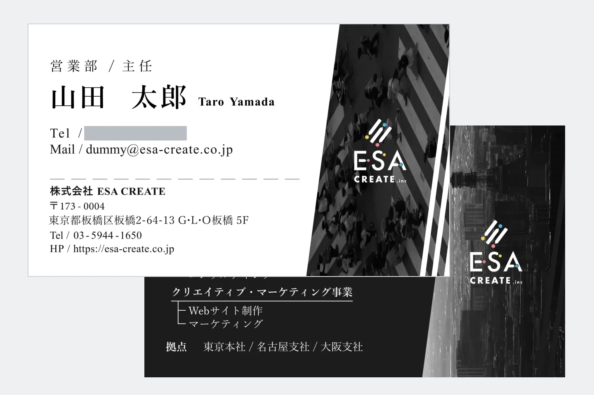

グラフィック / 名刺
株式会社ESA CREATE 名刺リニューアル
実際の利用シーンを踏まえ、縦型の旧名刺から91×55mmの横型へリニューアル。3案からの検討と調整を経て、FigmaでのデザインからIllustratorでの印刷用データ作成まで担当しました。
- 名刺デザイン
- Figma
- 印刷用データ

YAMAGUCHI AOI
山口 碧
1996年生まれ。中京大学卒業後、ドラッグストアで店舗スタッフから店長まで経験しました。売場づくりを通して「伝え方」や「見せ方」が人の行動を変える面白さを知り、Webデザイナーへ転身しました。
現在は、これまで学習してきたHTML / CSS / JavaScriptを使用し、情報設計・UIデザイン・実装の両面からWeb制作に取り組んでいます。現場で培った利用者視点を活かし、目的やターゲットに合わせて、読みやすく迷いにくいデザインを考えることを大切にしています。
Webデザイナーとして経験を積みながらデザインの視点を磨きつつ、ChatGPTやCodexなどのAIも制作を支える道具として活用しています。AIに判断を任せるのではなく、要件整理やアイデア出し、実装、確認作業などを効率化し、その分、情報設計やUI、仕上がりの確認に時間を使えるようにしています。新しい情報や活用方法も日々学びながら、制作環境の変化に柔軟に対応できるWebデザイナーを目指しています。

グラフィック / 名刺
実際の利用シーンを踏まえ、縦型の旧名刺から91×55mmの横型へリニューアル。3案からの検討と調整を経て、FigmaでのデザインからIllustratorでの印刷用データ作成まで担当しました。

Webサイト
自身が制作・展開するオリジナルの羊キャラクターの公式サイト。世界観の表現と、LINEスタンプ・絵文字やInstagramへの入口を設計。要件定義・情報設計からデザイン、実装、公開まで一貫して担当しました。

Webサイト
新築住宅の購入やリフォームを検討する30〜50代のファミリー層を想定したコーポレートサイトをデザインしました。新規顧客の獲得と問い合わせにつなげるため、サービス内容やFAQなど、検討時に生まれやすい疑問を先回りして解消できる情報構成を設計しています。

Webサイト
転職やキャリアアップを考える20〜40代をターゲットに、総合キャリア支援プログラムの受講生募集LPをデザインしました。無料体験への申し込みをゴールとして、サービスへの疑問が生まれやすいポイントの直後にCTAを配置し、内容を理解しながら申し込みまで進める導線を設計しています。

Webサイト
新たな配送手段を検討する企業の物流・調達担当者をターゲットにしたBtoB向けコーポレートサイトをデザインしました。「迅速かつ正確な配送」という強みが伝わるよう、キービジュアルやアイコン、情報の優先順位を整理し、問い合わせまで迷わず進める構成を設計しています。

Webサイト
大学生や20代の社会人を中心に、キャリアチェンジを検討する人をターゲットとしたプログラミングスクールのLPをデザインしました。情報量を整理しながら視覚的に内容を把握できる構成とし、ページ内のCTAにも一貫性を持たせています。

Webサイト
既存コーポレートサイトのデザインルールを引き継ぎながら、新たに追加するコンテンツエリアをFigmaでデザインしました。既存ページとの統一感を保ちながら、PC・スマートフォンそれぞれで情報が読みやすくなるレイアウトを設計しています。

POP作成
群馬県のフットサルチーム「デルミリオーレ群馬」の毎月の試合告知POPの作成。Photoshopを利用して提供素材の切り抜きや明るさ色味調整、Figmaでの配置調整、テキスト変更などを行い試合日時や会場などの情報を告知。

Webサイト
支給されたデザインカンプをもとに、HTML / CSSを使用してレスポンシブ対応のWebコーディングを行いました。デザインの意図を保ちながら、画面幅に応じて読みやすく操作しやすいレイアウトになるよう実装しています。

Webサイト
支給されたデザインカンプをもとに、HTML / CSSを使用してレスポンシブ対応のWebコーディングを行いました。PC・スマートフォンそれぞれの表示を確認しながら、デザインをWeb上で再現しています。
デザインと実装を行き来しながら、目的に合ったWebサイトを制作しています。制作内容に応じてAIも取り入れ、作業を効率化しながらデザインや仕上がりの確認に時間を使える環境を整えています。


WebサイトやLP、バナーなどのデザイン制作に使用しています。ワイヤーフレームからUIデザイン、プロトタイプまで作成し、実装時の再現性も意識して設計しています。
パーツやコンポーネントを整理しながら全体の統一感を保ち、ボタン配置、余白、文字サイズなど、視認性や操作性を考えたUIデザインを行っています。

Photoshopでは、写真の切り抜きや色味・明るさの調整など、Webサイトやグラフィック制作に必要な画像加工を行っています。
Illustratorでは図形や文字組みに加え、名刺などの印刷用データ作成にも使用しています。用途やターゲットに合わせて、配色・文字サイズ・余白を調整しながら制作しています。

HTML / CSS / JavaScriptを使用したWebサイトの実装に利用しています。レスポンシブ対応やUIの動作確認を行いながら、デザインの意図をWeb上で再現しています。
MOS資格を取得しており、基本操作から関数、表作成、データ整理、管理表の作成まで対応しています。用途に合わせて情報を整理し、確認や更新がしやすいデータづくりを意識しています。
情報を整理し、内容の優先順位や読みやすさを考えながら資料を作成しています。テキストや図版の配置、余白、視線の流れを調整し、内容が伝わりやすい資料に整えています。
Webサイトの構造を組み立てるために使用しています。コンテンツの意味や読み順を意識し、デザインだけに依存しない分かりやすいマークアップを心がけています。
レスポンシブ対応を含むレイアウトやスタイリングに使用しています。画面幅に応じた表示調整やUI表現を行い、デザインの再現性と使いやすさを意識して実装しています。
ナビゲーションやカルーセルなど、UIの動きやインタラクションの実装に使用しています。必要な機能に合わせて処理を組み込み、操作しやすいWebサイトになるよう調整しています。
文章や構成の整理、アイデア出し、調査など、制作を進めるための補助ツールとして活用しています。自分で目的や方向性を決めたうえで、考えを整理したり制作を効率化したりするために使用しています。
Web制作の実装・修正・検証を支援する開発ツールとして活用しています。要件やデザインの意図を整理したうえで、コーディングや調査、テストなどを補助させ、制作時間の短縮と品質確認に役立てています。
GITHUB
GitHubでは、Webサイトの制作物や個人開発したWebツールなどを公開しています。デザインだけでなく、実装や改善を継続している取り組みもご覧いただけます。
GitHubプロフィールを見る